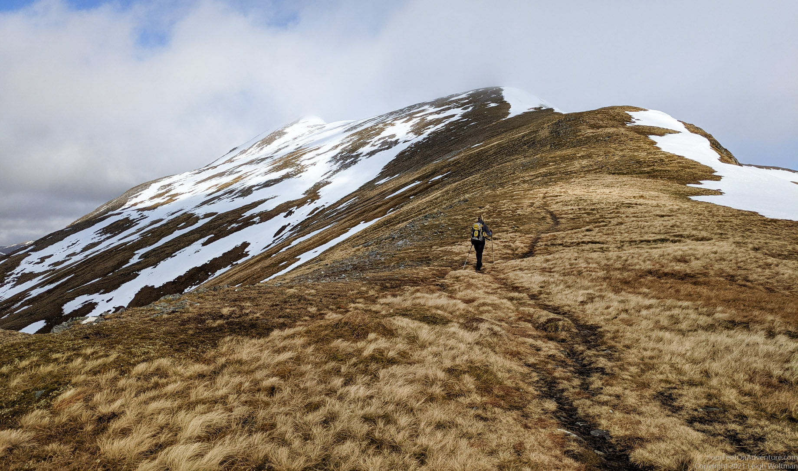
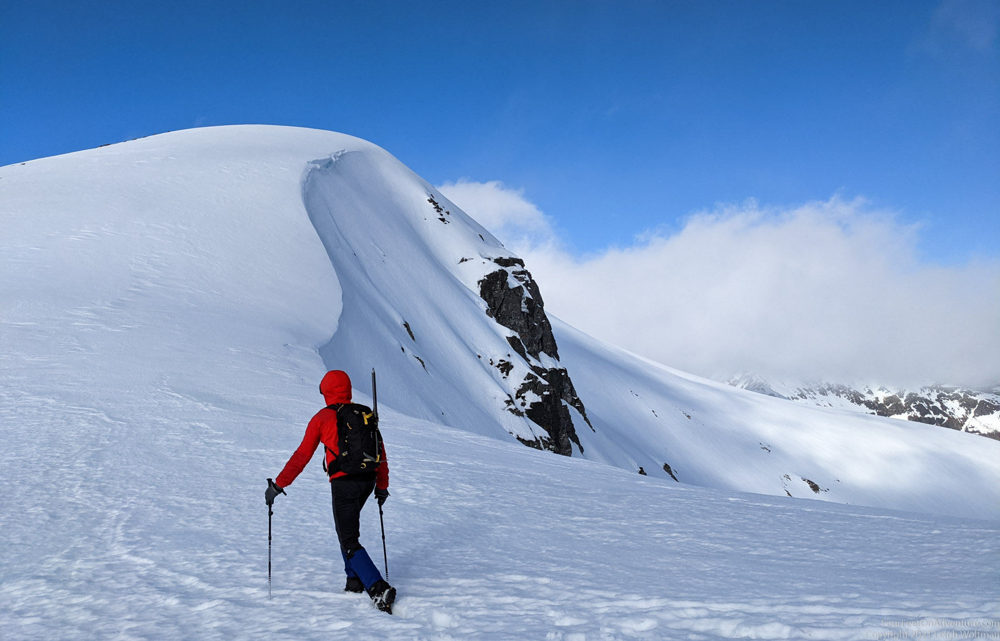
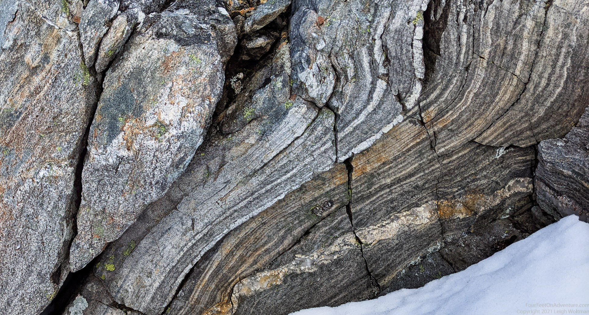
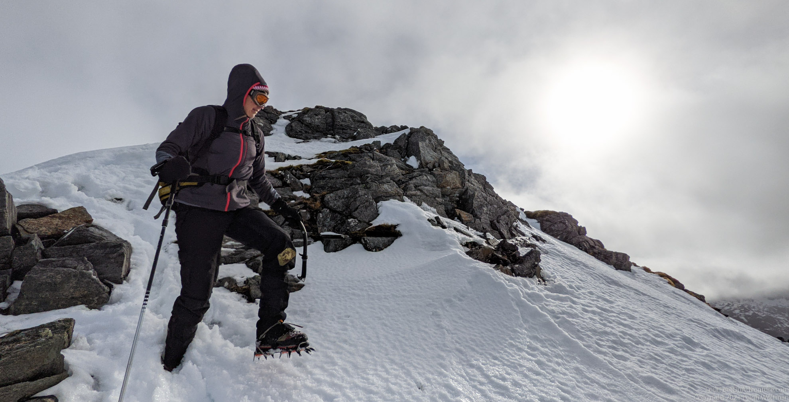
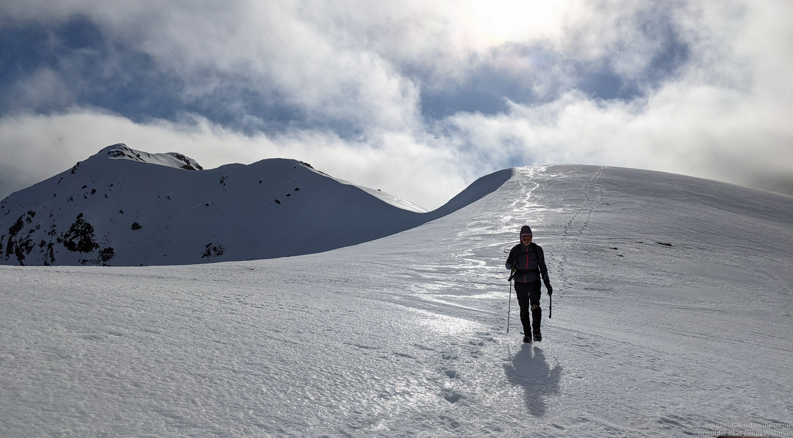
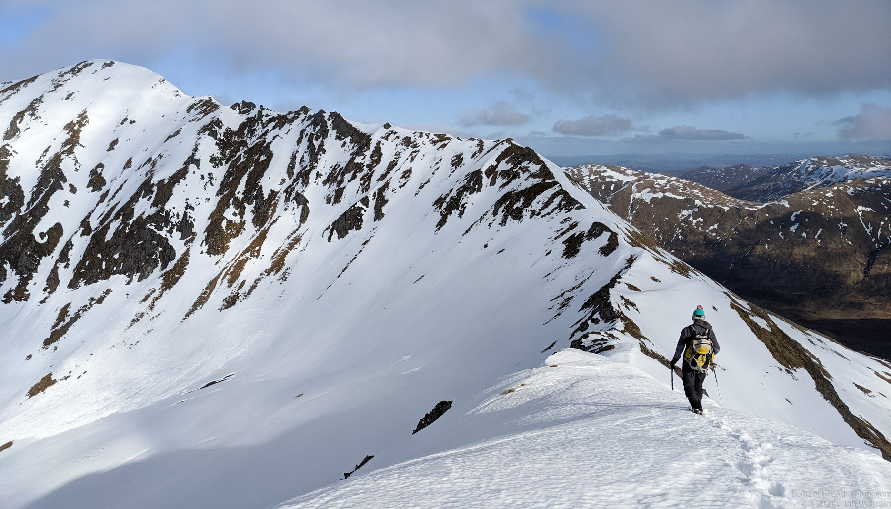
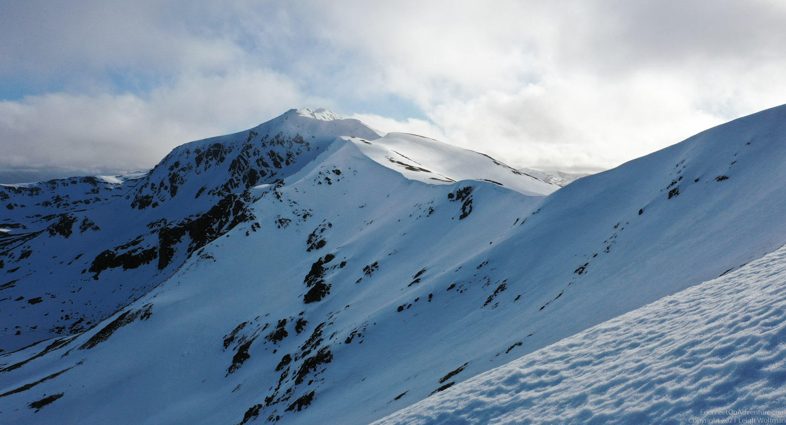
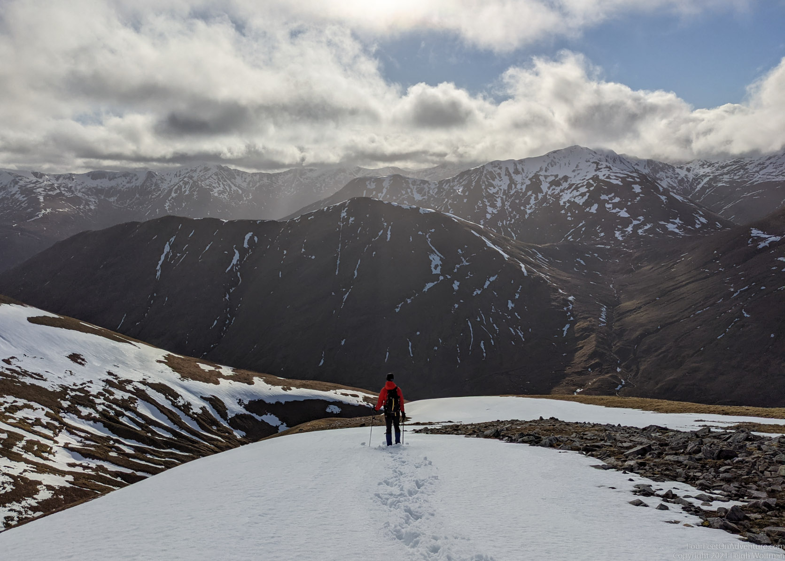
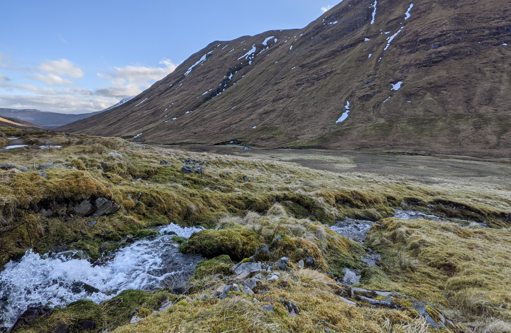

A’Chraileag and Stob Coire na Crailleig
We’ve had our eyes on this hill for a while. The snow has been melting, but because this hill is fairly high we’re hoping for a bit of snow still on top. Snow makes the surface flat so you don't have to walk around stones and can make walking so much easier, but it can also make walking harder if not frozen and slush.
The walk up is steep and straightforward. We keep going and after many false summits, we finally reach the real one. Not to be missed, with a massive cairn of rocks indicating the summit.



From the top, a ridge keeps going. We love ridges, especially in snow conditions. The snow is a bit soft, so we have to be careful, especially with cornices. When we are unsure we poke with our sticks through the snow to make sure we are still standing on rock. But mostly rocks are poking out of the snow here and there, indicating where the ridge is. The rock layers are quite special here and there. We feel good, and immensely enjoy our walk.

From Stob Coire na Crailleig the ridge continues North-East to another top. The summer route description indicates some scrambles, and we are not sure if we are comfortable enough continuing with the soft snow conditions, but for the moment we feel fine, and we decide to walk until we are getting doubts, then discuss and decide. We can always go back after all.


Halfway the top we come across just that, conditions that we don’t feel comfortable with. We discuss for a while, assess from different angles, anticipate more of such instances a bit further, and decide to call it a day. Better turn around once too many times then once not where we should have. It’s sad, but still we have thoroughly enjoyed our ridge walk.


The way down on the other side is mostly fun, as we can use snowfields to bum slide or shoe slide down. It’s a bit of a walk still back to the car, but not unpleasant.

Down in the Glen the spring has started. Plants are growing, flies are flying, and even some frogs are waking up from their winter holes and start to move around in their puddles of water. Such a difference is this friendly spring atmosphere here in the Glen compared to the windy snowy conditions at the ridge on the top of the hill. We enjoy a last bit of sunlight before the sun disappears behind the hill next to us. Another beautiful hike in the pocket.
